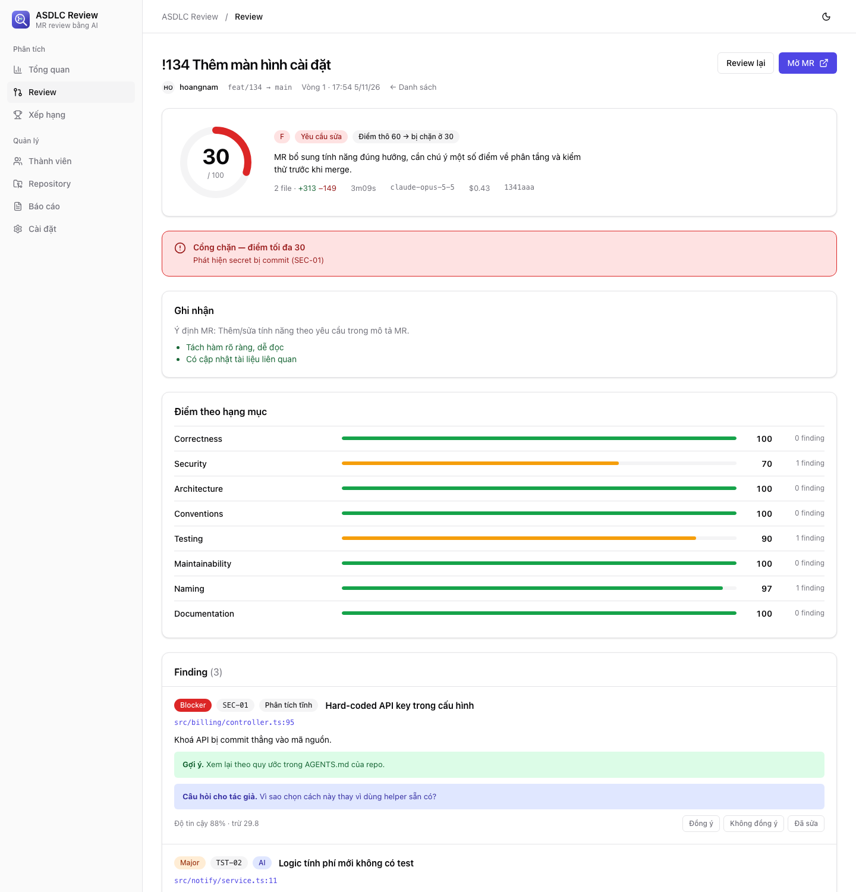

AI chỉ đi tìm vấn đề và nêu bằng chứng. Việc chấm điểm 0–100 do công thức đảm nhiệm, nên cùng một kết quả review luôn ra cùng một điểm.
Phần cần phán đoán giao cho AI. Phần cần công bằng, lặp lại được giao cho code.
Còn lại là code thường: dễ kiểm thử, dễ giải trình, không bất ngờ.
Code và token không đi qua máy chủ trung gian nào. Chỉ cần GitLab và một AI provider.
